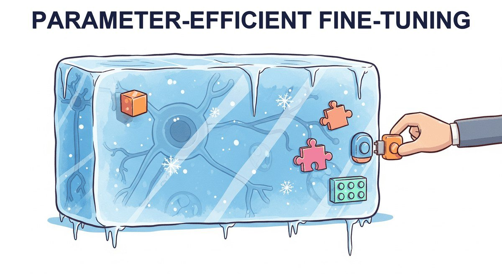

"The best parameter is the one you don't have to train."
LoRA, Refreshingly Frugal AI Agent
Chapter 18 introduces fine-tuning. This chapter covers what most practitioners actually do instead: parameter-efficient fine-tuning. LoRA, QLoRA, IA3, prefix tuning, prompt tuning, and the merging tricks (DARE, TIES) that let you stack multiple adapters. PEFT is the reason fine-tuning a 70B model on one GPU is possible.
Chapter Overview
The deep treatment of catastrophic forgetting lives in Section 16.1. The discussion below focuses on how PEFT mitigates the same effect.
Full fine-tuning of a 7B parameter model requires about 14 GB just for the weights in FP16, plus optimizer states that push the total past 56 GB. For most practitioners, this puts full fine-tuning out of reach without expensive multi-GPU setups. Parameter-efficient fine-tuning (PEFT) methods solve this problem by training only a tiny fraction of parameters (often less than 1%) while achieving quality that rivals or matches full fine-tuning.
This chapter covers the most important PEFT techniques in depth, starting with LoRA and QLoRA (the dominant methods in practice) and extending to newer approaches like DoRA, LoRA+, and adapter-based methods. You will learn not just the theory behind each method, but also how to configure hyperparameters, select target modules, and merge adapters for efficient deployment.
The final section surveys the rapidly evolving ecosystem of training platforms and tools, from Unsloth (which delivers 2x speedups with half the memory) to managed platforms like Axolotl and LLaMA-Factory. By the end of this chapter, you will be able to fine-tune any open-weight model on a single consumer GPU.
Full fine-tuning is expensive and often unnecessary. Parameter-efficient methods like LoRA and QLoRA let you adapt large models by training only a small fraction of their parameters, dramatically reducing compute costs. These techniques make fine-tuning accessible even on consumer hardware, a practical skill used throughout Parts V and VI.
- Explain the mathematical foundation of LoRA, including the low-rank decomposition W' = W + BA and why it works in transformer weight matrices
- Configure LoRA hyperparameters (rank, alpha, target modules, dropout) for different model architectures and task types
- Apply QLoRA with NF4 quantization, double quantization, and paged optimizers to fine-tune large models on consumer hardware
- Compare advanced PEFT methods (DoRA, LoRA+, Prefix Tuning, IA3, adapters) and select the right one for a given scenario
- Implement multi-adapter serving strategies using LoRAX or S-LoRA for production deployments
- Use modern training platforms (Unsloth, Axolotl, LLaMA-Factory, torchtune, TRL) to streamline the fine-tuning workflow
- Merge trained LoRA adapters back into base models and evaluate the merged result
- Select appropriate cloud infrastructure (Colab, Lambda Labs, RunPod, Modal) based on budget and scale requirements
Prerequisites
- Chapter 16: Fine-Tuning Fundamentals (supervised fine-tuning workflow, data preparation, evaluation)
- Chapter 9: Inference Optimization (quantization basics, GPU memory concepts)
- Chapter 3: The Transformer Architecture (attention mechanism, weight matrices)
- Familiarity with PyTorch training loops and the Hugging Face Transformers library
- Basic linear algebra (matrix multiplication, rank of a matrix)
Sections
- 17.1 LoRA & QLoRA LoRA is the single most important technique for practical LLM fine-tuning. Entry
- 17.2 Advanced PEFT Methods LoRA dominates the PEFT landscape, but it is not the only option. Advanced
- 17.3 Training Platforms & Tools The fine-tuning tool landscape is evolving rapidly. Intermediate
- 17.4 Soft Prompts: Prompt Tuning, Prefix Tuning, and P-Tuning Soft prompt methods occupy a fascinating middle ground between prompt engineering and fine-tuning. Intermediate
- 17.5a Knowledge Distillation: Foundations & Pipelines The teacher-student framework, white-box vs. black-box distillation, real-world LLM case studies, small-but-capable models, and the practical pipeline. Advanced
- 17.5b Distillation: Licensing, Speculative & Reasoning Provider licensing constraints, speculative distillation for inference acceleration, and chain-of-thought distillation that transfers reasoning into smaller students. Advanced
- 17.6 Model Merging & Composition Model merging creates multi-skilled models by combining weights from specialized fine-tunes, requiring no GPU training at all. Advanced
- 17.7 Continual Learning & Domain Adaptation LLMs are expensive to pretrain and quickly become outdated. Advanced
What's Next?
In the next chapter, Chapter 18: Alignment: RLHF, DPO & Preference Tuning, we move from making models efficient to making them aligned with human preferences, using reinforcement learning from human feedback and direct preference optimization.